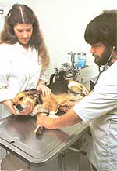

Need an outside job to help make ends meet on the homestead? Maybe you should .
Veterinarians in small and large animal practices everywhere utilize the services of professional veterinary technicians (or animal health technicians, as some folks refer to them). These helpers serve as right-hand persons to the doctor, but don't necessarily have any formal medical training. Often all that's required of a beginning "vet techie" is a knack with creatures and a willingness to learn new skills. Many of these jobs are full-time, but frequently a part-time or temporary position will open up, providing a busy homesteader with a perfect opportunity to earn some extra cash.
And I can highly recommend this line of half-time work to any animal-conscious back-to-the-lander needing a way to help make ends meet without being away from home eight hours a day. I'm a vet technician and farmer myself, and, frankly I can't think of two more satisfying and complementary careers. My job lets me develop my talents while working with other animal enthusiasts ...leaving me refreshed for tending farm and family.
JOB DESCRIPTION
The duties of a veterinary technician vary from hospital to hospital. However, the following list will give you a general idea of what could be required of you, should you choose to pursue this line of work. Each of these procedures can be learned on the job, so don't be discouraged if some of them sound intimidating. A technician's responsibilities increase with competency; in the beginning you probably wouldn't be asked to perform tasks that you're not familiar with.
[1] Handling and restraint of hospitalized and outpatient animals.
[2] Nursing duties, including taking temperatures, cleaning and bandaging wounds, administering treatments prescribed by the vet. and medicating hospitalized patients.
[3] Lab chores, consisting of parasite identification, urine analysis, bloodwork, anal some microbiological as well as other diagnostic procedures.
[4] Surgical tasks, including preparation of the patient (anesthetizing, shaving, and scrubbing), postoperative care, maintaining a dark, surgical record, and cleaning and sterilizing instruments, gloves, and other surgical equipment. Occasionally a technician is also asked to scrub up and assist the doctor during an operation.
[5] Pharmacological duties, such as filling prescriptions and dispensing medications according to the vet's orders.
[6] Other responsibilities, including recep tiontst duties, grooming, kennel maintenance, and janitorial work.
JOB QUALIFICATIONS
I've been working part-time in a two-vet hospital for several years. Since we're located in the vicinity of three towns, we're kept pretty busy and have on staff (besides the two doctors) a full-time receptionist, two technicians, both of us part-time, and several part-time kennel and janitorial workers. Most of our job applicants are high school students looking for part-time work, but these youngsters are generally hired to do the kennel and maintenance chores, while the tech positions are reserved for older individuals.
What are some of the qualities a vet technician needs to have? Well, first of all, he or she must have a gentle but firm touch with animals. Just because you're an animal lover doesn't necessarily mean you're a good animal handler. I've seen co-workers who cuddle every puppy or kitten that comes through the door but cringe at the prospect of having to approach an unruly, vicious dog. By the same token, you may get along great with horses, but how do you fare with pigs or sheep? It's very important for a veterinary technician to have an intuitive knack for dealing with all animals, and if you don't possess this trait, you'd better think twice about pursuing this vocation.
Besides a feel for creatures, common sense and good judgment come in handy on this job. Every day, situations arise in which both these traits are needed-facing a teeth-baring cur or a hissing feline, for example, or scheduling your time over the course of a hectic day, or determining what constitutes an emergency (and what does not) when the vet's not around.
Something else to consider is the fact that with every patient comes an owner, and these folks can often be hysterical, irate, or overly protective. So a technician's ability to calm or contend with pet "parents" is often iust as important as his or her handling of their fourlegged "children"!
Vet helpers also need a certain amount of physical strength and-perhaps more valuable- stamina. Not all patients will be as cooperative as a ten-pound, welltrained Pomeranian. What about that massive St. Bernard who simply refuses to be caged? On the other hand, don't let this particular prerequisite worry you too much: I weigh 115 pounds and am certainly no Wonder Woman, but I manage just fine. Of course, I never hesitate to call for assistance from a co-worker when I need it.
The last quality I'd like to cite is certainly not the least important one: a strong stomach. You'll never make it through surgery assist or certain emergency situations without one
LANDING THE JOB, AND DO YOU REALLY WANT IT?
Veterinary technicians are hired from a variety of backgrounds. Some animal clinics do prefer licensed graduates of an accredited technical school (or folks who at least have a background in animal husbandry or biology). But don't be discouraged if you don't have such training or experience, because many vets-like the ones I work forare much more interested in your skill with animals and ability to garner on-the-job knowledge than they are in credentials. (Some technicians start out as kennel workers or even volunteers, and then move up when a job opens up and they've proven themselves ready for more responsibility.)
But pause just a moment before you get your sights set on landing a tech job. I'd be misleading you if I failed to mention a few of the drawbacks inherent in this type of work. For one thing, weekend and evening work is often required because of emergencies. For another, the janitorial and kennel chores you might be asked to help with can get pretty messy and unpleasant. And then there's the most difficult aspect of this job ...having to assist in euthanatizing a beloved pet and then trying to comfort its bereft master.
As far as I'm concerned, the advantages of being a professional animal health technician far outweigh the disadvantages. The pay is pretty good: It starts at about $3.75 an hour in my area and can go to more than $6.00 depending on how skilled you become and where you live. You'll probably receive free vet care for your animals along with discounts on vaccines and medications. And your pets and livestock will also benefit from your increased knowledge of veterinary medicine.
On a more personal note, taking on the may not tally with some people's version of daily responsibility of caring for sick and in-the true homesteading ethic ...but as I see jured beasts in a hospital environment can be it, becoming a part-time veterinary technician highly rewarding work. Ah, I know that tak-is a mighty good compromise. It can help you ing a fob (that is, working for someone else) sustain your country lifestyle!
When I first took my job at the vet clinic, I was required to work a forty-hour week, assisting another full-time technician. As the weeks passed; though, I found it increasingly difficult to keep up with my farm chores at home. After all, I was tackling two full-time jobs: one at the hospital and one on my homestead. And what with the garden, livestock, and house remodeling to tend to before and after clinic work, I had absolutely no free time left over for leisure activities. Daily walks, reading, and lust plain goofing off were luxuries I simply couldn't afford.
On the other hand, I couldn't afford to quit my job-not with all the feed, equipment, and building supplies I needed to buy. Besides, I liked my work at the clinic. What I need"d was simply a decrease in hours there. So I approached my boss. At first he was op posed to the idea, but after I pleaded with him and told him how hard I'd work, he finally consented and cut my hours to part-time.
A few months later, the full-time technician quit her job to return to school. She was replaced by a working mother who (like me) begrudged working full-time away from home. As I had, she waited until she felt secure in her job before asking the boss to decrease her hours, too. Convinced he needed at least one full-time techie, he was against the plan in the beginning. But my co-worker and I joined forces and persuaded him that we'd buckle down, work twice as hard, and between the two of us handle the work load for the entire hospital. Unable to refuse, he gaze us the go-ahead. I'm nor happy to re port that my partner and I have been successfully (and happily!) sharing a job for the past two years, with nary a complaint from the top.
Perhaps you, too, have a co-worker you'd like to split hours and responsibilities with. (Let me warn you, though, job sharing only works with fullcooperation of two equally motivated persons. If one isn't willing to take on his or her fair share of the daily work load, the situation could become intolerable.) If you want to share a job, I say "Go for it!" It'll probably take lots of determination, a logical approach, and some fine-tuned pleading to convince your present or prospective employer ...but for the hours gained plus the continued security of a steady (albeit smaller) paycheck, it's worth the trouble to "go double" and share the load!
|
 |
|
|